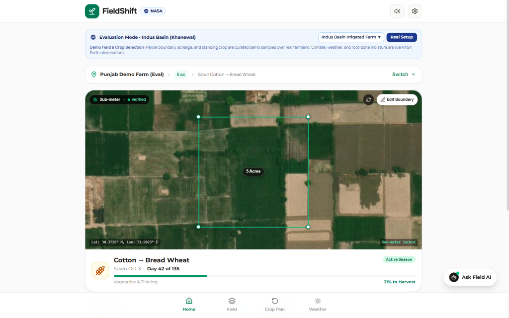
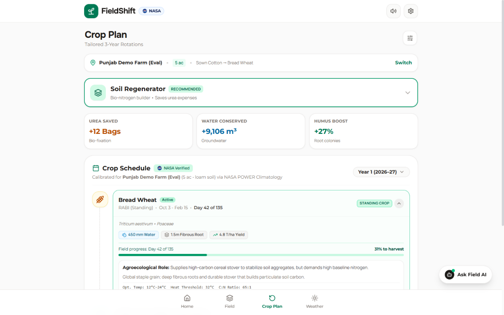
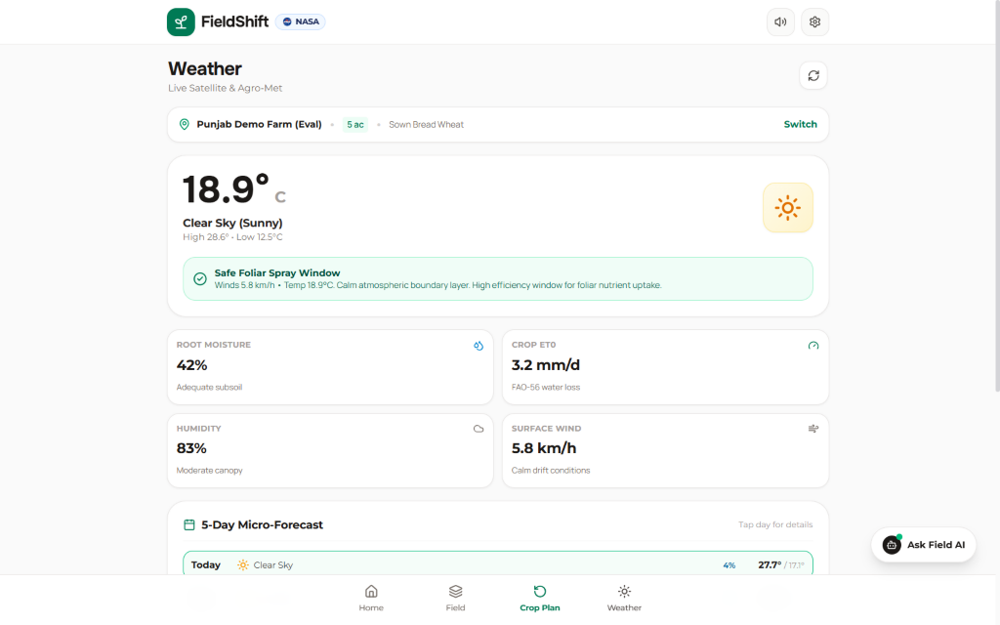
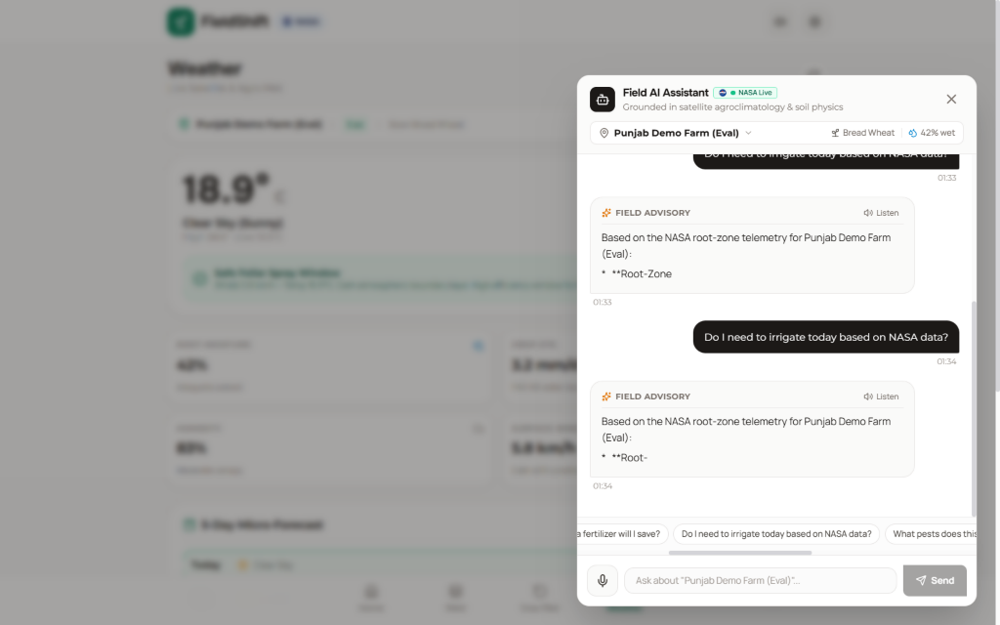

24/7 Satellite Farm Surveillance, Multi-Objective Crop Rotation Optimization & AI Senior Agronomist for Climate-Resilient Agriculture.
Across major food baskets (Indo-Gangetic Rice–Wheat, US Midwest Corn–Soy, Sahelian drylands), farmers face shifting thermal regimes and erratic rainfall without field-level satellite decision tools.
A cross-platform Web & Android application that turns NASA Earth Observations into a practical 3-year farm action plan.
Calibrated regional baselines with GPS auto-location, reverse geocoding, and interactive Leaflet satellite field boundary drawing.
Generates 3 optimized 6-season strategies (Soil Regenerator, Drought Shield, Balanced Market) plus a Custom Rotation Builder.
Gemini 2.5 Flash grounded in live GPS, sowing date, NASA telemetry, and soil diagnostics—with automatic offline deterministic fallback.
Queries power.larc.nasa.gov (climatology/point, AG community) with 0.5° spatial grid snapping, localStorage caching, and live Open-Meteo 5-day agricultural forecasts.
| NASA Parameter | Physical Measurement | Agronomic Role in Green Roots |
|---|---|---|
GWETROOT |
Root-Zone Soil Wetness (0–100 cm) | Drives Water Resilience Index (WRI) & flags moisture-deficit irrigation alerts |
PRECTOTCORR |
Bias-Corrected Precipitation | Balances seasonal crop water demand against effective rainfall |
T2M, T2M_MAX, T2M_MIN |
2m Air Temperature (Mean / Extremes) | Evaluates crop thermal suitability & extreme heat stress penalties |
ALLSKY_SFC_SW_DWN |
Surface Shortwave Solar Irradiance | Models photosynthetic radiation availability across growing seasons |
RH2M, WS10M, TS |
Humidity, 10m Wind & Skin Temp | Enriches agroclimatology profiling & foliar spray window advisories |




org.fieldshift.app)./api/chat calling gemini-2.5-flash (API key never exposed to client).Green Roots bridges spaceborne Earth science and everyday farm decisions—ready to deploy globally today.
Legume rotations biologically fix atmospheric nitrogen, cutting synthetic urea bags and runoff.
GWETROOT-calibrated rotations and drought-hardy crop swaps reduce irrigation groundwater stress.
Works at any GPS coordinate worldwide on desktop web, mobile web, and native Android.